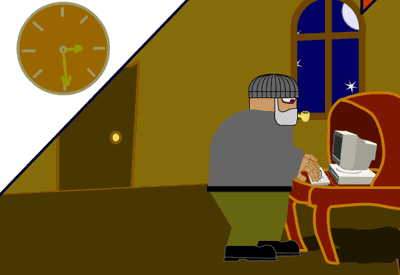
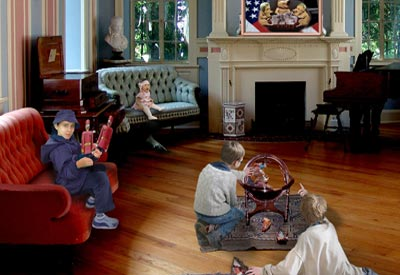

|
| |
Juried Student Exhibition
|  Tucker Dyer, 'Hemmland'. animation still |
 Alina Tyutyunik. Digital Print |
March 1 - March
29
reception Tuesday March 15, 3-5pm
163 William Street, New York, NY
Tues - Fri 10am -6pm
works in animation
and print by:
William
Doyle • Tucker Dyer • Majd Farah • Roy Gilis • Sabine
Henri • Savita Jardine • Reid Levin •
Prajesh Patel • Ganesh Roy • Kevin Shaw • Alina Tyutyunik
• Jamie Warriner • Nicholas Walker